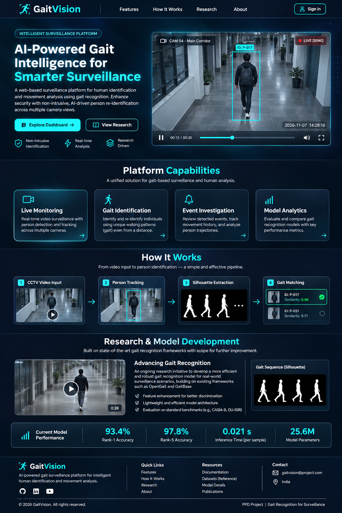

◉
Video Surveillance
View camera activity through a unified monitoring workspace with camera status and tracking overlays.
An intelligent surveillance research platform exploring human gait recognition through video analysis, movement representation and AI-powered pattern matching.

Bring surveillance activity and gait research workflows together in a clear, operator-friendly interface.
View camera activity through a unified monitoring workspace with camera status and tracking overlays.
Explore the process of extracting movement patterns and gait representations from pedestrian sequences.
Organize authorized demonstration profiles and their gait sequence metadata.
Review candidate events, inspect supporting video context and record operator review outcomes.
Compare baseline and proposed approaches using documented experimental protocols.
Summarize system activity and model evaluation in one reporting area.
A modular pipeline designed to support research experimentation and future model integration.
Receive video from an authorized source or uploaded research sample.
Locate pedestrian regions and maintain track sequences across frames.
Prepare silhouette or pose-based movement representations.
Compare feature representations and present candidates for human review.
GaitVision provides a practical interface for presenting the research workflow, integrating an existing baseline and evaluating a proposed model as development progresses.
Explore the dashboard, camera monitoring interface and gait analysis prototype.
Camera activity, gait analysis and events requiring review.
| PROFILE | CAMERA | SCORE | TIME | STATUS |
|---|---|---|---|---|
| Demo Person 104 | CAM-01 | 94.2% | 14:32 | Review |
| Demo Person 087 | CAM-02 | 88.7% | 14:29 | Review |
| Unknown track | CAM-03 | — | 14:27 | Unmatched |
Multi-camera monitoring workspace.
Video-to-gait feature workflow and candidate review.
Connect the authorized video upload and preprocessing API later.
Expected outputs after model integration:
• Person detection and track ID
• Silhouette / pose sequence
• Gait feature embedding
• Ranked candidate profiles
• Human review decision
Fictional sample enrollment records.
| PROFILE ID | DISPLAY LABEL | SEQUENCES | ENROLLED | STATUS |
|---|---|---|---|---|
| GV-0104 | Demo Person 104 | 12 | 12 Nov 2026 | Active |
| GV-0087 | Demo Person 087 | 09 | 10 Nov 2026 | Active |
| GV-0062 | Demo Person 062 | 07 | 08 Nov 2026 | Review |
Review model-generated candidate events.
| EVENT ID | TIME | CAMERA | TRACK | SCORE | STATUS |
|---|---|---|---|---|---|
| EV-2408 | 14:32 | CAM-01 | TR-091 | 94.2% | Pending review |
| EV-2407 | 14:29 | CAM-02 | TR-089 | 88.7% | Pending review |
| EV-2406 | 14:27 | CAM-03 | TR-086 | — | No candidate |
Baseline and proposed model comparison workspace.
| MODEL | DATASET / SPLIT | RANK-1 | RANK-5 | STATUS |
|---|---|---|---|---|
| Baseline model | Specify benchmark | — | — | Awaiting results |
| Proposed model | Same evaluation split | — | — | In development |
Operational and research reporting overview.
These figures are illustrative. Final reports should distinguish operational statistics from model accuracy and document the dataset, protocol and evaluation conditions.
Workspace and access configuration.
Workspace: GaitVision PPD Demo
Environment: Frontend prototype
Data mode: Synthetic sample data
Authentication: UI preview only
Retention policy: Not configured
Demo sign-in preview. Authentication is not connected.